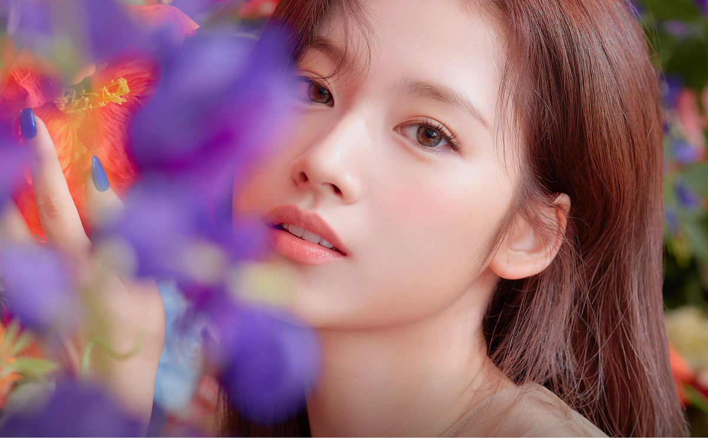

Sana

About
Minatozaki Sana (湊崎 紗夏; born Dec 29, 1996), known mononymously as Sana, is a Japanese singer and a member of the Kpop group Twice formed by JYP Entertainment through the survival show Sixteen. Sana made her debut with Twice on Oct 20, 2015.
Profile
Stage Name: Sana
Full Name: Minatozaki Sana
Country of Birth: Japan
Birthday: Dec 29, 1996
Height: 168 cm (5'6'')
Weight: 47 kg (104 lbs)
Blood Type: B
Fun Facts and Trivia
Age trivia: Minatozaki Sana was 18 years old (international age) when she debuted with Twice in 2015.
Specialty: calligraphy.
Favorite number: 12 because her birthday month is December.
She was scouted by a JYP talent agent while shopping with her friends.
Sana is an only child.
Hobbies: collecting body mists and perfumes, eating, shopping.
Family: parents, grandmother.
Religion: Paganism.
MBTI: ENFP.
Favorite fruit: raspberry.
Sana is one of Twice’s three Japanese members. The other two Japanese members are Myōi Mina and Hirai Momo.